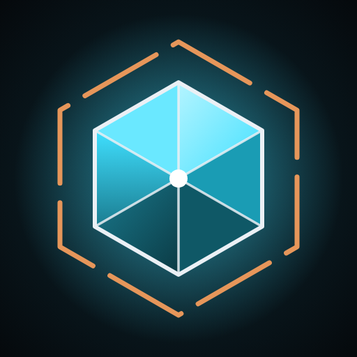
Press kit
Umbral Idle: Last Salvage
A sci-fi idle game for Android where the prestige reset is a gamble. Strip a dying solar system, then choose when to let it collapse: the longer you hold on, the more it pays.
Fact sheet
| Developer | Beast of Burden Studios (James, solo developer) |
|---|---|
| Based in | Adelaide, South Australia |
| Release date | 4 October 2026 |
| Current version | 1.2, the Visual Overhaul (6 October 2026) |
| Platform | Android (Google Play) |
| Genre | Idle, incremental, prestige |
| Price | Free to play. Optional rewarded ads, a one-off Ad-Free purchase and other optional purchases. No gacha, no premium currency. |
| Languages | English, French, German, Spanish, Brazilian Portuguese, Simplified Chinese |
| Links | Google Play · Discord · Studio site |
| Press contact | beastofburdenstudios@gmail.com |
About the game
Short description. Salvage a dying solar system before it collapses. Then let it collapse, and ride the instability for a bigger payout.
Long description. The star is failing and the system is coming apart. You run the last salvage operation still working: tap for Salvage, then build Drones, Reactors, Archive Scanners and Static Coils that keep producing while you're away.
Every run ends in the Collapse. Most idle games treat the prestige reset as a chore to rush through. In Umbral Idle it's the main decision: an Instability gauge climbs for eight hours, multiplying your Salvage, so you choose between cashing out early and riding the run to the peak. Each Collapse pays Iso-Cores, a permanent boost that makes the next system faster, and every new system arrives with its own name and its own young star.
Beyond the main loop sit the Debris Belt, with three zones of salvage runs, missions and push-your-luck Recovery Operations that build a permanent crew; the Derelict Fleet, ten lost ships to find, tow home and repair; an eleven-tier Tech Archive; and the Research Lab, a second, slower prestige layer where you build a universe from raw Matter and crunch it back down for Insights.
Features
- A reset worth timing. Instability rewards riding a run, so every Collapse is a choice, not a button.
- Two prestige layers. The Collapse in the main game, and the Big Crunch in the Research Lab, with about 100 Phenomena to uncover.
- Big moments that look big. Cinematics for the Collapse, the Big Crunch and ship arrivals. Skippable, and they shorten after the first few.
- Plays while you're away. Offline progress, a 28-day return calendar that pauses rather than resets, cloud save.
- Fair by design. Ads are optional and rewarded, ad removal is a single purchase, and there's no gacha.
- 57 achievements on Google Play Games, plus leaderboards.
About the developer
Beast of Burden Studios is James, a solo developer in Adelaide. Umbral Idle: Last Salvage is the studio's first release, designed, built and balanced by one person. Art, music and sound come from licensed and CC0 asset packs, credited in game.
Trailer
In motion
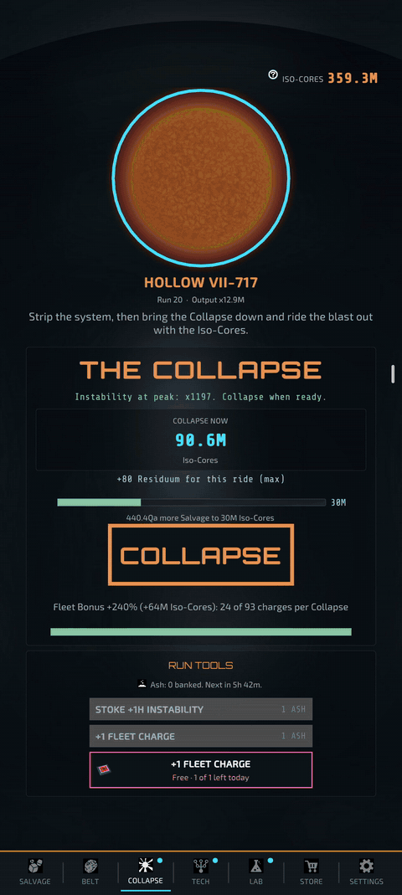
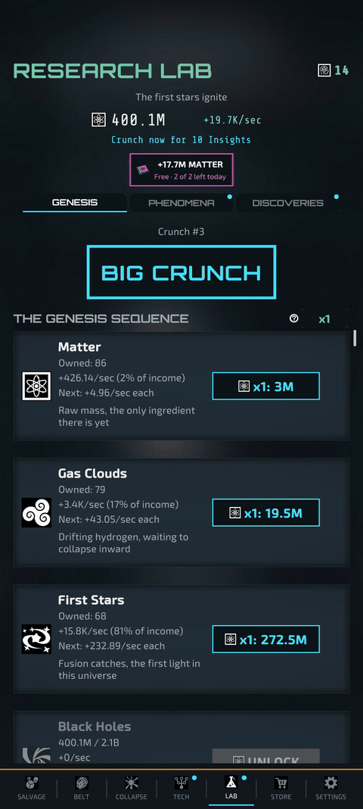
Screenshots
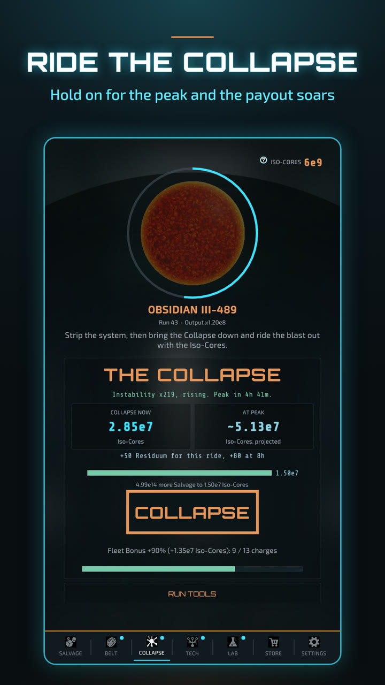
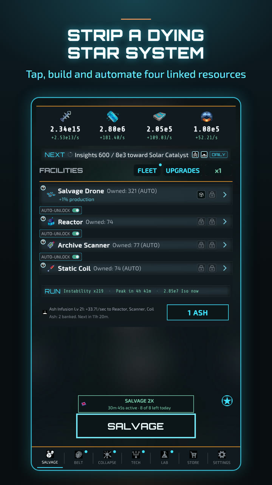
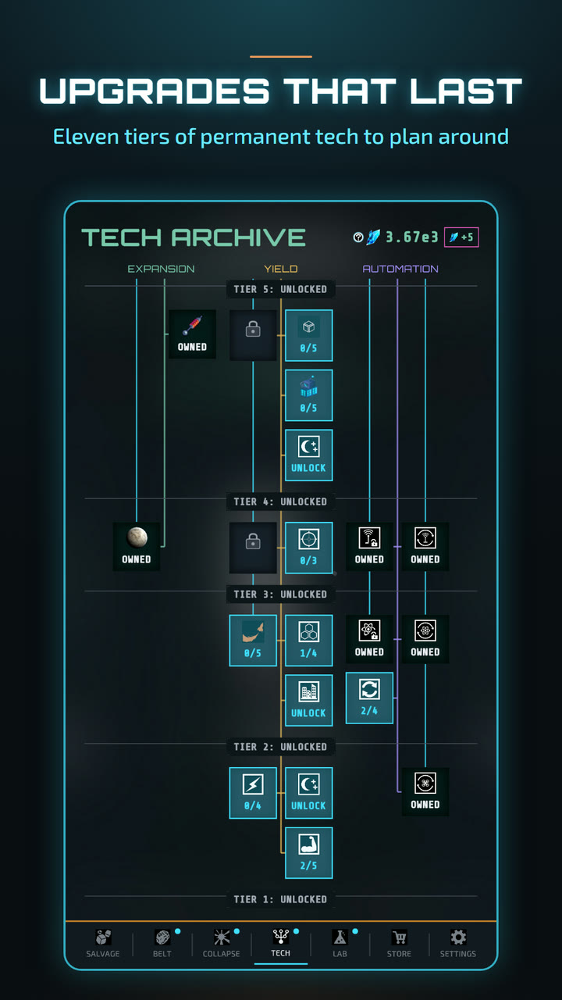
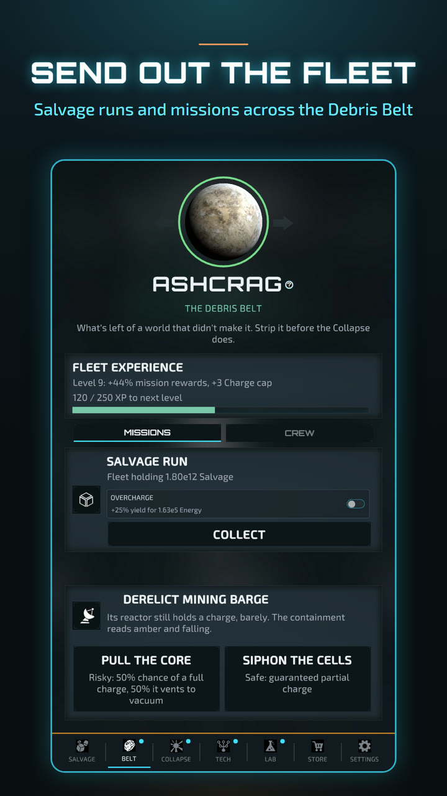
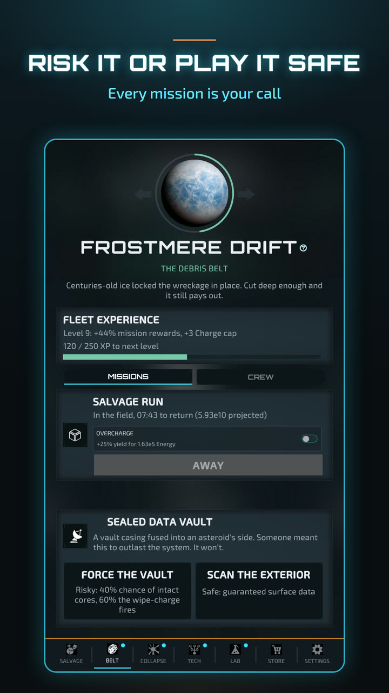
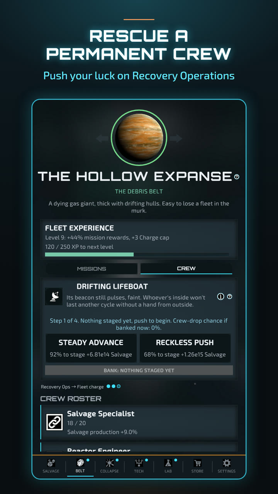
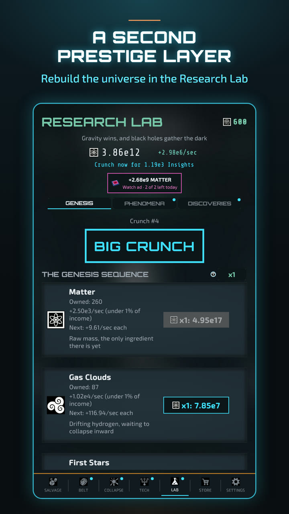
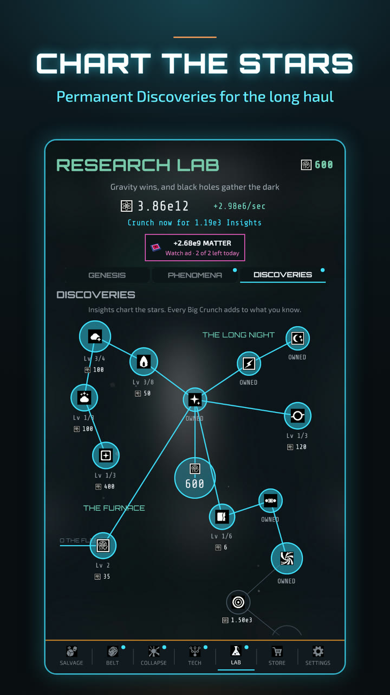
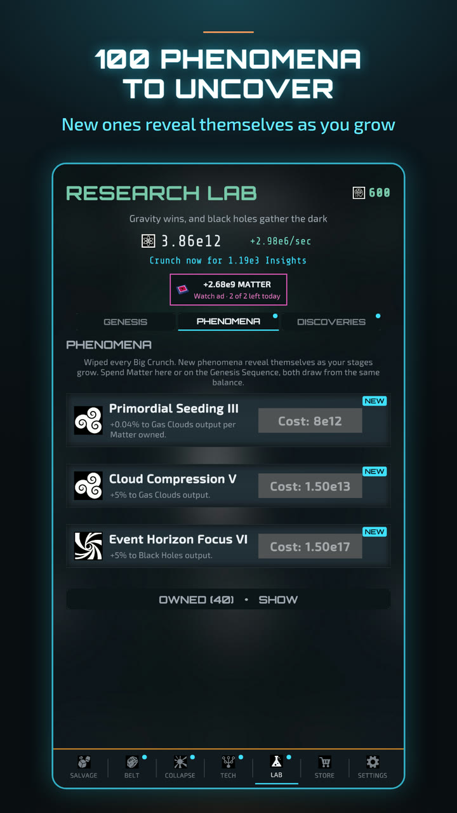
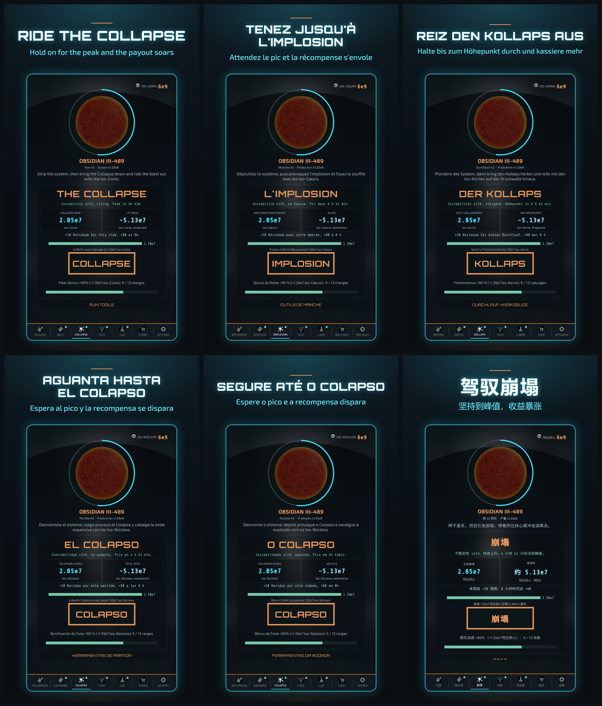
Downloads
- TrailerMP4, 1080×1920, 31s
- All screenshotsZIP of 9 PNGs, 1080×1920, 5.6 MB
- Collapse clipMP4 with sound, 11s, 2.0 MB
- Big Crunch clipMP4 with sound, 11s, 1.7 MB
- App iconPNG, 512×512 (SVG)
- Feature graphicPNG, 1024×500


Free to use in coverage of the game. Screenshots in the other five languages are available on request.
Contact
Press, review requests and interviews: beastofburdenstudios@gmail.com. I'm happy to send a promo code for Ad-Free if it helps.
Based in Adelaide (ACDT, UTC+10:30), so replies may arrive overnight for you.